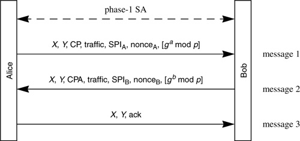

Networking Security Networking Security Networking Security Security Networking Security Networking Security Networking Charlie Kaufman Radia Perlman Mike Speciner Prentice Hall Network Security: Private Communication in a Public World, Second Edition
18.6. Phase-2 IKE: Setting up IPsec SAs
Phase-2 IKE is known as "Quick Mode". It is a 3-message protocol that negotiates parameters for the phase-2 SA, including cryptographic parameters and the SPI with which the phase-2 SA will be identified.

The phase-2 exchange sends nonces and other information which get shuffled into the SKEY-SEED computed in the IKE SA to compute integrity and encryption keys for the IPsec SA, It can optionally do a Diffie-Hellman exchange if it would like PFS for the IPsec SA (the IKE SA might be much longer lived than the IPsec SA, and its keying material might be stolen after the IPsec SA concludes). There is no way to negotiate Diffie-Hellman parameters in the phase-2 exchange. If her choice of Diffie-Hellman parameters is unacceptable, Bob will complain. One would think they might as well just use the Diffie-Hellman group chosen for phase 1, but phase 2 does have the initiator specify the group, so IKE allows phase 2 to use a different group.
All messages in Quick Mode are encrypted with the Phase 1 SA's encryption key Kenc (which IKE calls SKEYID_e) and integrity protected with the Phase 1 SA's integrity key Kint (which IKE calls SKEYID_a).
This exchange agrees upon parameters, and encryption and/or integrity keys for each direction, to be used by the created IPsec SA.
Now we'll talk about the details. Each message starts with the following, unencrypted:
X, which is the pair of cookies generated in phase 1, and Y, a 32-bit number chosen by the phase-2 initiator to distinguish this phase-2 session setup from perhaps many phase-2 sessions simultaneously being set up within the same phase-1 session. There are two problems with this design. One is the replay problem (see §18.5.7 Message IDs). The other is that it is possible for Bob and Alice to each initiate a phase-2 exchange, and choose the same value for Y, which would create confusion. The IKE specification notes this possibility but remarks that it's "unlikely". But they could easily have reduced the probability of Y-value collisions from "unlikely" to zero by having a convention whereby the initiator of the phase 1 exchange chooses odd Y's and the responder of the phase 1 exchange chooses even Y's.
The rest of each message (following X and Y) is encrypted, using SKEYID_e, and integrity protected using SKEYID_a. The IV for the first message is the final ciphertext block of the last message of phase 1 hashed with Y. The IVs for the other messages in the exchange consist of the final ciphertext block of the previous phase 2 message. The other fields in the phase 2 exchange are:
authenticator (an integrity check on the message using SKEYID_a) proposed crypto parameters (message 1), and accepted crypto parameters (message 2) nonces in messages 1 and 2 optionally Diffie-Hellman values in messages 1 and 2 optionally a description of the traffic to be sent (see §18.5.9 Traffic Selectors)
|